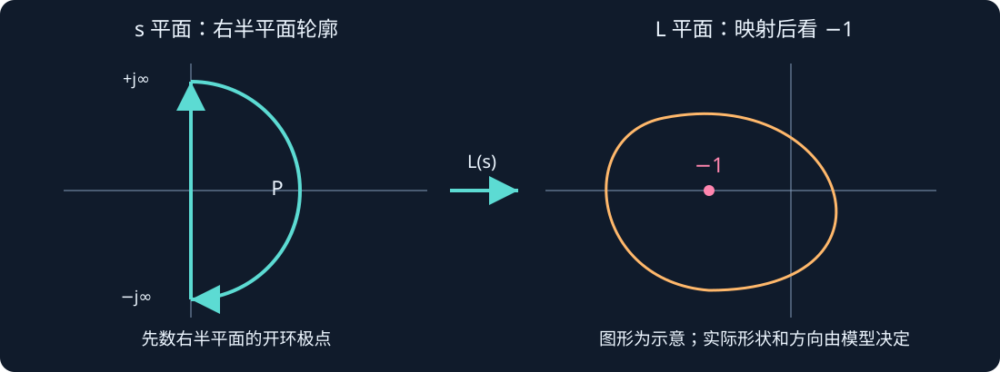
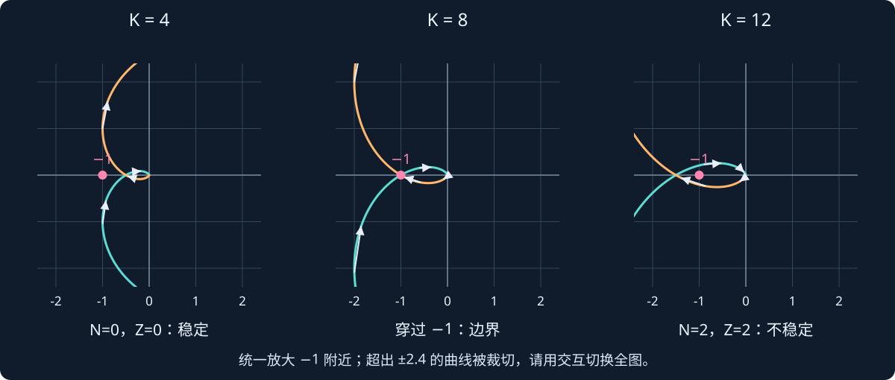
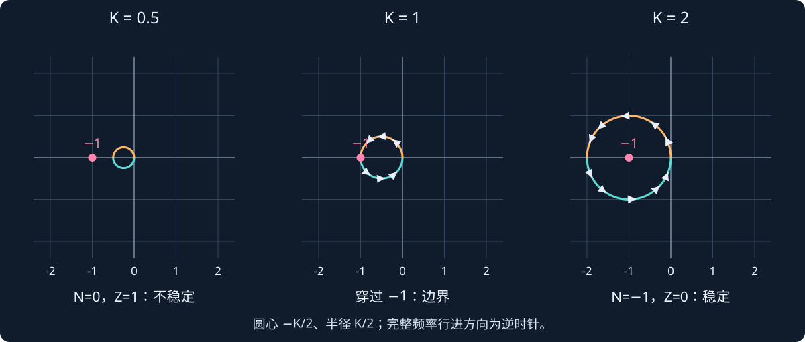
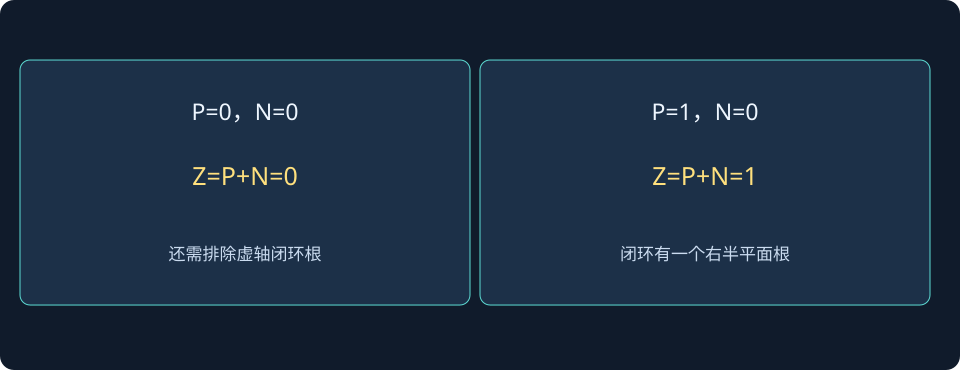

第 13 课：Nyquist 稳定判据——沿着曲线判断闭环稳定性
阶段 0 · 先看清复平面上的点、方向和包围，再用 P、N、Z 判断闭环根数。
本课接续 Bode 图。已经知道每个频率会得到一个幅值和相位，现在把这个复数画成平面上的点。先记住一个任务：已知开环环路，判断接上负反馈以后，闭环有没有发散模态。 不需要一开始就背复变函数证明。
1. 为什么盯着 −1，而不是原点？
单位负反馈中，控制器与对象的乘积记为 L。闭环输入输出关系是：
$$ T(s)=\frac{L(s)}{1+L(s)}. $$
闭环特征方程来自分母：
$$ 1+L(s)=0 \quad\Longleftrightarrow\quad L(s)=-1. $$
因此 −1 是关键点：环路映射到这里，闭环特征式就变成零。这里的 −1 是复数 −1+j0，既有幅值 1，又有 −180° 相位。
要分清两个平面：s 平面中的横坐标表示极点实部，单位通常为 s⁻¹；L 平面画的是环路复数值，横纵坐标是其实部与虚部。Nyquist 曲线不是机器人位置轨迹，也不是闭环极点的轨迹。
2. 一个频率怎样变成图上的一个点？
令 $s=jω$，计算 L(jω)，再画到坐标：
$$ \bigl(\operatorname{Re}L(j\omega),\;\operatorname{Im}L(j\omega)\bigr). $$
以稍后使用的模型为例，在 $ω=1$ rad/s 时：
$$ \begin{aligned} L(s)&=\frac{K}{(s+1)^3},\\ (1+j)^3&=-2+2j,\\ L(j)&=\frac{K}{-2+2j} =-\frac K4-j\frac K4. \end{aligned} $$
若 $K=4$，图上就是 (−1,−1)，不是关键点 (−1,0)。横坐标都为 −1 不代表曲线穿过关键点。连续改变频率，就得到一条曲线。
实系数模型满足共轭关系：
$$ L(-j\omega)=\overline{L(j\omega)}. $$
所以负频率分支是正频率分支关于实轴的镜像；但它沿完整轮廓的行进方向不能随意反过来。
3. 先统一轮廓和计数方向
本课采用包围右半平面的顺时针 Nyquist 轮廓：沿虚轴从 −j∞ 向 +j∞ 走，再沿右半平面的大半圆返回。这里两个例子的高频环路值都趋于零，因此大半圆映射收缩到 L 平面原点附近。

| 符号 | 数什么？ | 在哪里数？ |
|---|---|---|
| P | 环路的右半平面极点数，计重数 | 开环 s 平面 |
| N | 完整映射对 −1 的净环绕数，顺时针为正 | L 平面 |
| Z | 闭环特征式的右半平面零点数，计重数 | 闭环 s 平面 |
计数关系为：
$$ \boxed{N=Z-P}\qquad\Longleftrightarrow\qquad\boxed{Z=P+N}. $$
为了严格稳定，需要 $Z=0$，并且没有虚轴闭环根，也没有被输入输出相消隐藏的不稳定内部模态。不同教材可能把逆时针规定为正，届时公式符号随之变化；务必把公式与方向一起使用。
“净”意味着顺、逆方向会抵消，不是看到两段弧线就数成两圈。曲线如果穿过 −1，环绕数在该参数处不能按普通情况定义，要单独处理稳定边界。
4. 例一：三个开环稳定极点，为什么增益过大反而失稳？
4.1 模型与 P 的数值
取 $K>0$，单位负反馈：
$$ L(s)=\frac{K}{(s+1)^3}. $$
三个开环极点都在 $s=−1$，因此：
$$ P=0. $$
这里没有虚轴开环极点，暂时不用处理小半圆绕行。高频映射也趋于零，适合先学习普通情况。
4.2 先算负实轴交点
每个 1+jω 的相位为 arctan ω，分母有三项，所以连续展开的相位为：
$$ \angle L(j\omega)=-3\arctan\omega. $$
曲线落在负实轴时，这里相位为 −180°：
$$ \begin{aligned} -3\arctan\omega_{pc}&=-180^\circ,\\ \arctan\omega_{pc}&=60^\circ,\\ \omega_{pc}&=\sqrt3\ \mathrm{rad/s}. \end{aligned} $$
再算该频率幅值：
$$ \begin{aligned} |L(j\omega_{pc})| &=\frac{K}{(1+\omega_{pc}^2)^{3/2}}\\ &=\frac{K}{(1+3)^{3/2}} =\frac K8. \end{aligned} $$
相位 −180° 表明它指向负实轴，故坐标为：
$$ \boxed{L(j\sqrt3)=-\frac K8+j0}. $$
K 变大时，曲线整体按比例放大；负实轴交点向左移动。交点只是读图线索，最终仍要检查完整曲线及方向。
4.3 对照三张图数环绕

| K | 负实轴交点 | 完整映射情况 | 结论 |
|---|---|---|---|
| 4 | −0.5 | $N=0$ | $Z=0$，闭环严格稳定 |
| 8 | −1 | 穿过关键点，单独分析 | 闭环到达虚轴边界 |
| 12 | −1.5 | 两个顺时针净环绕，$N=2$ | $Z=2$，闭环有两个右半平面根 |
$K=12$ 时为什么会是两圈？正、负频率的完整映射各形成一段包围关键点的回路；沿频率方向追踪，会发现两段都贡献顺时针环绕。不要把它想成“只画一个椭圆，所以最多一圈”。交互会同时给出路径数值环绕与闭环根，便于核对。
4.4 用闭环根独立核对
特征方程为：
$$ \begin{aligned} 1+\frac K{(s+1)^3}&=0,\\ (s+1)^3+K&=0,\\ s^3+3s^2+3s+(1+K)&=0. \end{aligned} $$
Routh 首列为：
$$ 1,\quad3,\quad\frac{8-K}{3},\quad1+K. $$
在 $K>0$ 的约定下，全正要求：
$$ 0<K<8. $$
若 $K=8$，可以直接分解：
$$ (s+3)(s^2+3)=0 \quad\Longrightarrow\quad s=-3,\;\pm j\sqrt3. $$
这同时解释了临界频率为什么也是 √3 rad/s。若不限制 $K>0$，完整严格稳定区间会是 $−1<K<8$；本课交互先限定正增益。
还可以直接求三根。令 $ρ=K^(1/3)$，有：
$$ s_1=-1-\rho,\qquad s_{2,3}=-1+\frac\rho2\pm j\frac{\sqrt3\rho}{2}. $$
$ρ>2$，也就是 $K>8$ 时，一对共轭根的实部变正。$K=12$ 时约为 0.145±1.983j，另一个根约 −3.289。数值与 $Z=2$ 一致。
4.5 动手实验：频率点与闭环极点一起看
先选 $K=4$、8、12 预设，再拖动频率。左图是 L 平面，黄色点显示当前正频率对应的环路复数；右图是闭环极点。勾选“放大 −1 附近”只改变视野，不改变 N、P、Z。关闭放大可查看全部曲线。
此演示需要 JavaScript。若没有显示，请检查浏览器设置。
先自己预测，再操作：$ω=0$ 时曲线从哪里出发？$ω=1$ 时为什么 $K=4$ 对应 (−1,−1)？K 接近 8 时，一对闭环极点怎样移动？
5. 例二：开环不稳定，为什么闭环仍然可能稳定？
5.1 先数 P，不沿用上例的结论
换成：
$$ L(s)=\frac K{s-1},\qquad K>0. $$
开环在 +1 有一个极点，所以 $P=1$。要使闭环 $Z=0$，需要：
$$ N=Z-P=0-1=-1. $$
负的顺时针计数，表示需要一个逆时针净环绕。因此此时“不包围 −1”反而不够：$N=0$ 会导致 $Z=1$。
5.2 这条曲线为什么是圆？
把复数分母实数化：
$$ \begin{aligned} L(j\omega) &=\frac K{-1+j\omega}\\ &=-\frac K{1+\omega^2} -j\frac{K\omega}{1+\omega^2}. \end{aligned} $$
令其坐标为 a、b，消去频率可得：
$$ \boxed{\left(a+\frac K2\right)^2+b^2=\left(\frac K2\right)^2}. $$
因此圆心是 (−K/2,0)，半径 K/2；最左点是 −K，最右点趋近原点。正频率从 −K 沿下半圆走向原点；连同负频率分支，完整行进方向是逆时针。

5.3 三种增益，对照圆与闭环根
闭环特征方程可以直接算：
$$ 1+\frac K{s-1}=0 \quad\Longrightarrow\quad s=1-K. $$
| K | −1 与圆的关系 | 环绕与根数 | 闭环极点 |
|---|---|---|---|
| 0.5 | 在圆外 | $N=0$，$Z=1$ | +0.5，不稳定 |
| 1 | 在圆上 | 穿过 −1，边界需单独分析 | 0，非渐近稳定 |
| 2 | 在圆内 | $N=−1$，$Z=0$ | −1，严格稳定 |
这里增加增益能把闭环极点向左推，与上例“增益过大失稳”不同。应根据模型与完整判据分析，不能把“增益越大越危险”当成普遍规律。
5.4 动手实验：跨过 $K=1$
观察左图圆是否包含 −1，再看右图极点处于虚轴哪侧。特别比较“曲线穿过 −1”和“极点穿过虚轴”：它们发生在同一增益 $K=1$。
此演示需要 JavaScript。若没有显示，请检查浏览器设置。
6. 为什么积分器需要额外处理？
若开环在原点有积分极点，例如：
$$ L(s)=\frac K{s(s+1)}, $$
普通 Nyquist 轮廓会穿过奇点，不能直接代入。要把轮廓在极点附近绕开，并计入小半圆的映射。只画正、负频率主分支可能遗漏重要部分。
本课两个完整例子都没有虚轴开环极点，目的是先把方向和 P、N、Z 学清。下一步遇到积分环路时，应先检查轮廓，而不是照搬图形。
7. 与 Bode 和稳定裕度的关系
曲线满足 |L|=1 时，对应 Bode 的增益交越频率；到达负实轴时，对应展开相位为 −180° 的交点。离 −1 多近，是理解增益裕度与相位裕度的入口。
使用流程：先数开环 P，检查虚轴极点；再看完整方向并求 N；计算 Z 并排除边界；确认稳定后，再讨论稳定裕度。多次交越或开环不稳定时，不能只挑一个正裕度就宣称闭环稳定。
不包围关键点，到底意味着什么？先固定 P 再回答
保持曲线计数 $N=0$，分别代入两种开环根数：
$$ \begin{aligned} P=0:&\quad Z=P+N=0,\\ P=1:&\quad Z=P+N=1. \end{aligned} $$
这两种结果不矛盾：环绕数不是闭环不稳定根数本身，它还要补上开环已有的右半平面极点。下图固定同一个计数结论，直接比较两种 P 的推理路径。
对于 K/(s−1)，选K=0.5时圆不包围−1，$P=1$、$N=0$，所以闭环根+0.5；选K=2时，曲线提供一个逆时针环绕，$N=−1$，把计数抵消为Z=0，闭环根−1。看图之前先写P，可以避免把开环稳定对象的经验误搬到开环不稳定对象。

读图与操作：两个交互选同样“不包围”状态，对比P与Z；再用闭环极点图核对。
使用条件：沿本课约定的右半平面顺时针轮廓，N以顺时针为正；边界不套普通环绕数。
先预测，再展开核对
若 $P=2$，为使Z=0，需要什么方向、几次净环绕？
查看思路与答案
需要N=−2，也就是两个逆时针净环绕；还要排除映射穿过−1和闭环虚轴根。
8. MATLAB：两条独立路线核对
% 需要 Control System Toolbox
s=tf('s');
figure; nyquist(4/(s+1)^3,8/(s+1)^3,12/(s+1)^3); grid on;
legend('K=4','K=8','K=12');
for K=[4 8 12]
disp(K); disp(roots([1 3 3 1+K]));
end
figure; nyquist(0.5/(s-1),1/(s-1),2/(s-1)); grid on;
legend('K=0.5','K=1','K=2');
for K=[0.5 1 2]
fprintf('K=%g, closed-loop pole=%g\n',K,1-K);
endNyquist 绘图核对曲线，直接求根核对右半平面根数。两种方法应一致。示例未由 MATLAB 实际执行；仅用基础 MATLAB 的 roots 也能独立核对第一模型的根。
9. 练习与提示
- 对第一个模型，在 $ω=0$、1、√3、很大时，分别写出曲线位置或极限。
- 不看图，用 Routh 判据求第一个模型的正增益严格稳定区间。
- 对第二个模型，手算 $K=3$ 时的圆心、半径、N、P、Z 和闭环极点。
- 为什么 $P=1$、$N=0$ 时，曲线没有包围 −1 也不能认为稳定？
- $K=8$ 与 $K=1$ 两个边界分别对应什么闭环根？为何不能用普通整数环绕数直接判定边界？
展开自查提示（先自己做）
第一模型：
$$ L(0)=K,\qquad L(j)=-\frac K4-j\frac K4,\qquad L(j\sqrt3)=-\frac K8,\qquad L(j\omega)\to0\quad(\omega\to\infty). $$
正增益稳定区间为 $0<K<8$。
第二模型：取 $K=3$，Nyquist 圆心为 $-1.5$、半径为 $1.5$。按本课环绕方向约定：
$$ N=-1,\qquad P=1,\qquad Z=P+N=0. $$
闭环极点为 $-2$，所以闭环稳定。若同一开环系统对应 $N=0$，则 $Z=1$，闭环仍有一个右半平面极点。